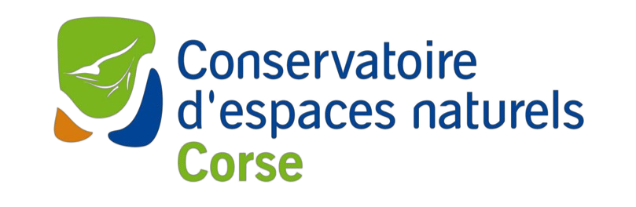

Flore des Serpentinites
Conservatoire d'espaces naturels de Corse
Initialisation...

Répartition de la Flore des Serpentinites en Haute-Corse
Espèces PNA
2026
Source : © CBNC
—
observations
—
espèces
—
communes
Fond
Fond de carte
×
✓
Plan IGN
✓
Orthophoto IGN
✓
Relief
✓
Satellite
Légende
Couches
Couches
×
Sentier du Cap Corse
chargement…
Sept étapes, de Macinaggio à Bastia
Opacité
100%
Zone tampon 500 m
chargement…
500 m de part et d'autre du sentier
Opacité
70%
Domaines serpentinitiques et roches associées (± 450 km²)
non chargé
Emprise géologique
Opacité
50%
Zones amiantifères
non chargé
Faible probabilité (± 580 km²)
Forte probabilité (± 340 km²)
Opacité
70%